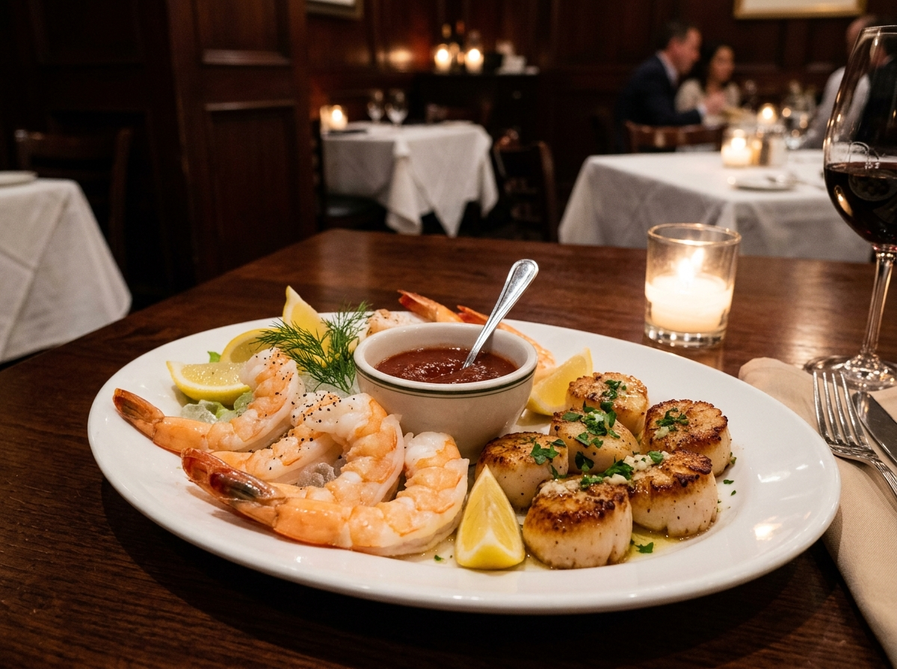
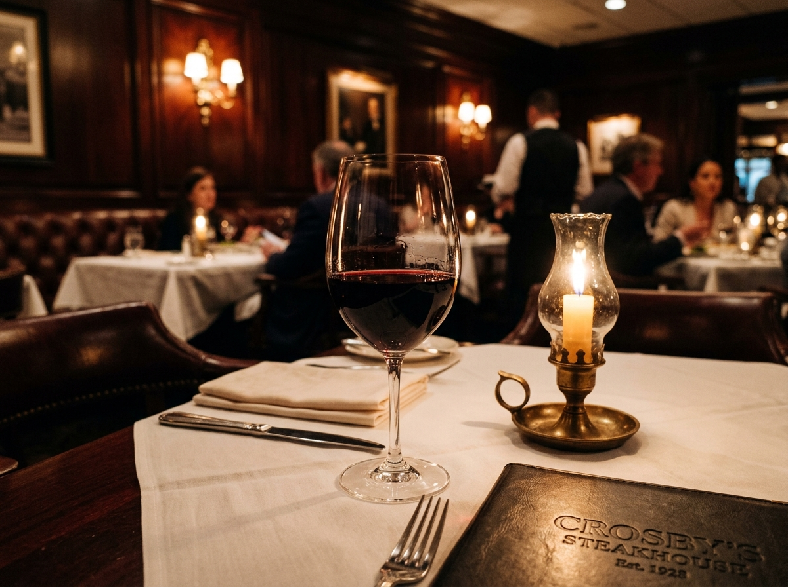

BEEF 'N BOTTLE
Classic American luxury, dark mahogany paneling, candlelit tables, white-linen service, and prime hand-cut steaks in Charlotte, North Carolina.
A Classic Charlotte Legacy Since 1958
For over 65 years, Beef 'N Bottle has remained one of Charlotte’s most enduring dining institutions — a haven of quiet elegance, dark wood, white linens, and uncompromising steakhouse traditions.
Stories in the Walls
Founded in 1958, Beef 'N Bottle retains the timeless charm of an vintage American steakhouse. Stepping into our dining room means stepping away from modern rush into low ambient candlelight, rich leather booths, and warm hospitality.
Whether celebrating a milestone anniversary, closing an important business agreement, or enjoying an intimate dinner for two, our restaurant offers an authentic fine-dining experience rooted in Charlotte history.
Discover Our History →
Signature Steakhouse Cuts
Every steak at Beef 'N Bottle is hand-selected, expertly aged, and broiled at high temperatures to seal in natural juices and flavor.
Bone-In Kansas City Strip
Richly marbled, bone-in cut cooked over high heat to deliver bold flavor and tender texture.
Filet Mignon
Center-cut tenderloin, prized for its exceptionally tender melt-in-your-mouth texture.
Classic T-Bone
Generous cut featuring both flavorful strip and tenderloin filet attached to the T-bone.
Hand-Cut Ribeye
Deeply marbled ribeye steak broiled to your exact temperature preference.
New York Strip
Firm texture and robust beef flavor, cooked with our signature house seasoning.
Center Cut Sirloin
Lean and flavorful sirloin steak broiled over intense flame for classic steakhouse taste.

Seafood & Surf Specialties
Beyond our steaks, Beef 'N Bottle offers an exceptional array of fresh seafood — from broiled sea scallops and jumbo shrimp cocktail to Atlantic flounder and signature crab cakes.
Pair your filet mignon with cold-water lobster tail or jumbo shrimp for the ultimate classic steakhouse surf-and-turf dinner.
View Seafood & StartersCurated Wine List & Spirits
An unforgettable steak deserves a proper wine pairing. Our wine list features rich Napa Valley Cabernet Sauvignons, Bordeaux reds, crisp whites, and classic craft cocktails.
Enjoy a classic martini or an aged red wine under low ambient candlelight surrounded by dark mahogany paneling.
Explore Dining Atmosphere
Reserve Your Table
We offer a limited number of online reservations via OpenTable. If online times appear unavailable, we strongly encourage guests to call us directly for personal assistance.